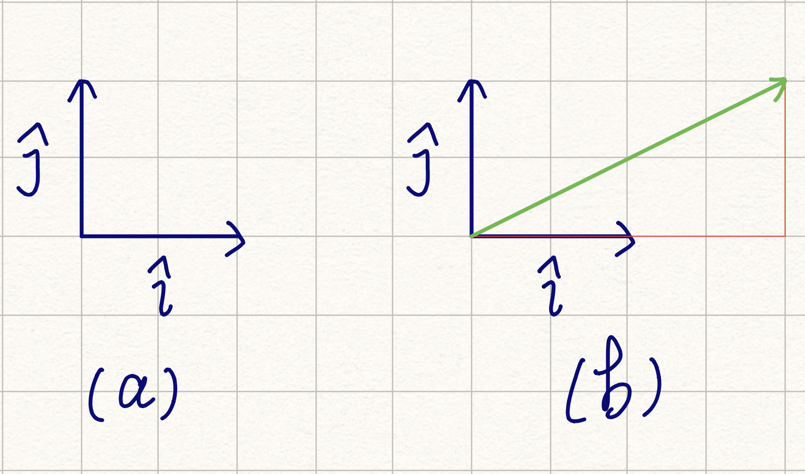
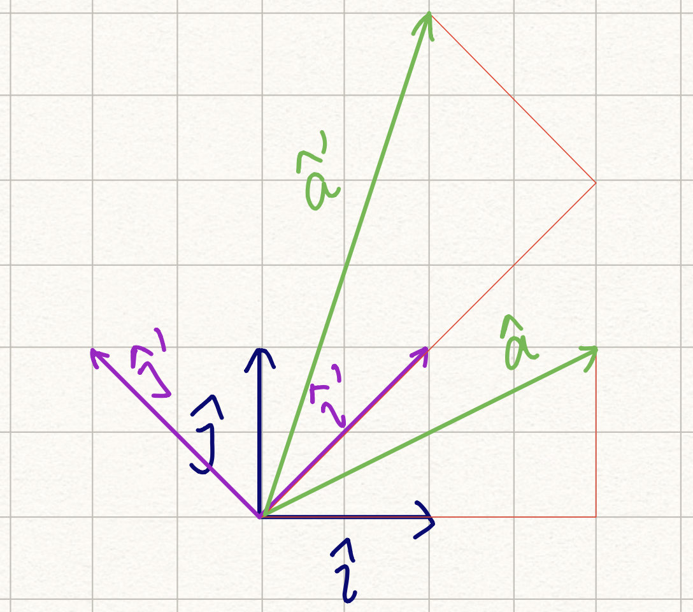

最近准备各种笔试，顺便复习了一下矩阵的相关知识。找到了一份非常棒的学习视频：线性代数的本质。这份学习材料是 3Blue1Brown 制作的，视频中会使用几何的方式揭示矩阵操作的本质。在 YouTube 和 Bilibili 上有官方提供的视频，都有中文字幕。视频中提到的特征值、特征向量还有基变换，都给了关于矩阵的全新的理解。所以在这里总结一下。
一开始的时候，世界是虚无的。所以基 i^ 和 j^ 被定义了，如图 (a) 所示。

有了基之后，空间里的向量都可以轻松地被表示出来。(b) 图中绿色的向量可以表示为 (2i^,j^)。
想象一下，现在把基 i^ 和 j^ 拉到 i^′ 和 j^′ 的位置，如图 (c) 所示。图 (b) 中绿色的向量也同时被拉伸了。

拉伸后的向量 a^′，使用新的基表示，仍然是 (2i^′,j^′)。同时，i^′ 和 j^′ 可以使用原先的基表示：
i^′j^′=i^+j^=−i^+j^也就是 i^′=(i^,j^)，j^′=(−i^,j^)。所以：
a^′=2i^′+j^′=i^+3j^简单来说，变换后的向量 a^′，使用原先的基表示，为 (i^,3j^)。
总结一下，变换后，空间中的向量与新的基的系数关系没有发生改变。而基本身改变了，向量在原来基中的表示发生对应的变化。这种变化，就是两个基变换的叠加。这种变换，就可以表示为矩阵：
[i^/i^′j^/i^′−i^/j^′j^/j^′]a^′=[i^/i^′j^/i^′−i^/j^′j^/j^′][2i^′j^′]=[i^3j^]简化一下，变换可以记录为：[11−11]。而变换可以从两个角度看：
- 可以计算变换后，原先空间中的向量变换后到位置；
- 可以计算在新的基下，一个向量映射到原先基中的位置。
在基 (i^′,j^′) 中，向量 a^′ 可以通过乘上变换矩阵，得到在基 (i^,j^) 中的表示：
[11−11][21]=[13]变换矩阵的两列分别是基 (i^′,j^′) 在基 (i^,j^) 中的表示。
那反过来呢？如果已知基 (i^,j^) 中的向量 a^′ 的表示，如何得到在基 (i^′,j^′) 中的表示？
使用同样的方法。构建从基 (i^′,j^′) 到 (i^,j^) 变换矩阵。
i^j^=21i^′−21j^=21i^′+21j^′则变换矩阵为：[1/2−1/21/21/2]，则：
[1/2−1/21/21/2][13]=[21]变换矩阵对任意向量都满足，进而可以推导出矩阵 [1/2−1/21/21/2] 和矩阵 [11−11] 互为逆矩阵。
也可以这样解释。定义基 (i^,j^) 为 基 A，基 (i^′,j^′) 为基 B，定义变换矩阵 [11−11] 为 AfromB，定义变换矩阵 [1/2−1/21/21/2] 为 BfromA。对于基 B 中的任意向量 V^B，有：
AfromBV^BBfromAV^ABfromAAfromBV^BBfromAAfromB=V^A=V^B=V^B=E
对于某个变换 T，变换前后方向相同或相反的向量 v^，称之为变换的特征向量；向量缩放的比例称之为特征值。根据方向不变，可得出：
Tv^=λv^根据上式，可得出：
(T−λI)v^=0从而推导出 det(T−λI)=0，进而求得特征值 λ 的值。带入原公式，求得特征向量。值得注意的是，特征向量并不唯一，毕竟在同一个方向上的向量是无限的。
类似于上文提到的变换 [11−11]，因为改变了所有向量的方向，故而没有特征向量和特征值；类似于变换 [1011]，X 轴上的所有向量的方向均没有发生改变，其他向量均有水平方向的拉伸，称之为切变，仅有一个大小为 1 特征值和一个方向的特征向量；而其他变换一般均有两个方向的特征向量。
举个例子🌰，变换 T=[0111]，根据公式可求得两个特征值为 21+5 和 21−5。进而取两个方向上的特征向量，这里选择 [21+5] 和 [21−5]。经过变换后，这两个方向上的向量只会发生缩放，缩放比例为特征值的大小，方向不会改变。
那么，如果以这两个向量为基呢？仍然令原基为基 A，新基为 B。易知：
AfromBBfromA=[21+521−5]=AfromB−1可知在新基中，变换 T 的表示为：
T′=BfromATAfromB=[21+50021−5]这是一个标准的对角矩阵。T′ 为该变换在新基中的表示，也可以重新映射回原基中：
T=AfromBT′BfromA最神奇的事情发生了。如果连续执行 n 次 T 变换，与在新基中连续执行 n 次 T′ 变换的效果是一致的：
Tn=AfromBT′nBfromA而 T′ 是对角矩阵，求 n 次方即为求对角线上元素的 n 次方。通过这种方式可以极大地降低计算复杂度。
仔细观察 Tn 的结果，可以手算一下 n 较小时的值。实际上，T 变换可以求 Fibonacci 数列，Tn 右上角的数即为 Fibonacci 数列的第 n 项。使用特征值和特征向量，可以求得 Fibonacci 数列的通项公式。由：
Tn=[21+521−5][(21+5)n00(21−5)n][205−5205+5105−105]可知：
Tn[0,1]=2(21+5)n105−2(21−5)n105=5(21+5)n−(21−5)n
与特征值类似的，还有奇异值，对应的矩阵分解称之为奇异值分解（Singular Value Decomposition，SVD）：
M=UΣV∗V∗、Σ 和 U 的作用分别是旋转到 V 的正交基、按照 Σ 进行拉伸、旋转到 U 的正交基，三个操作合成的效果与 M 一致。V 和 U 分别是 M∗M 和 MM∗ 的特征向量。Σ 同样为对角矩阵，对角线上的数称为奇异值，从大到小排列，为 M∗M 和 MM∗ 的特征值的非负平方根。
在维基百科上，有一个很清晰动画图示，点这里查看。
首先，需要理解清楚 U 和 V 的作用。对于一个单位正交基矩阵 V，假设：
V=[abcd]单位基意味着 a2+b2=1，c2+d2=1；正交意味着向量 [ab] 和 [cd] 垂直，即 ac+bd=0。比较神奇的是：
VTV=[acbd][abcd]=[1001]也就是说，VT=V−1。V∗ 称为 V 的共轭矩阵，对于单位矩阵来说，V∗=V−1。定义原基为 A，假设原基中的向量为 v^A，其在基 V 下的表示为：
v^V=V∗v^A=V−1v^A=VTv^A在新基中，向量的长度并不会发生变化（可以自己推导一下），因此也可以认为只是进行了旋转操作。后面再通过对角矩阵 Σ，向量在新基中实现了缩放。如果 Σ 中对应的值为 0，则同时实现了投影。最后通过单位正交基矩阵 U，再次完成一次旋转。
奇异值分解得到的三个矩阵，分别完成旋转、缩放和投影、旋转。另外，对于任意一个矩阵，都能完成奇异值分解，特征值就不一定了。网上也有关于奇异值和特征值的区别的讨论。
[待填坑]
- 奇异值分解（We Recommend a Singular Value Decomposition），火光摇曳
- 奇异值分解，维基百科
{kind=link}
{kind=link}